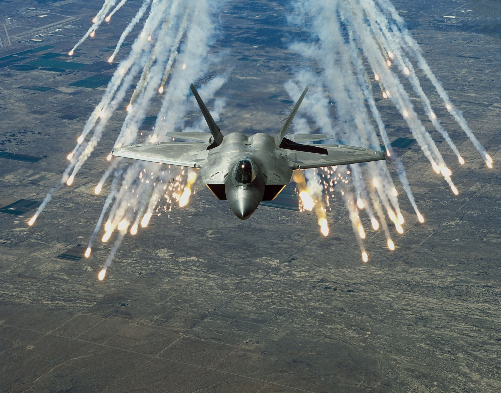
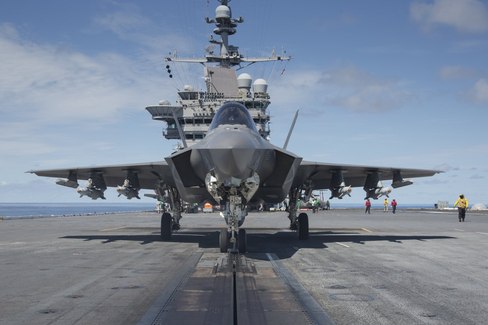
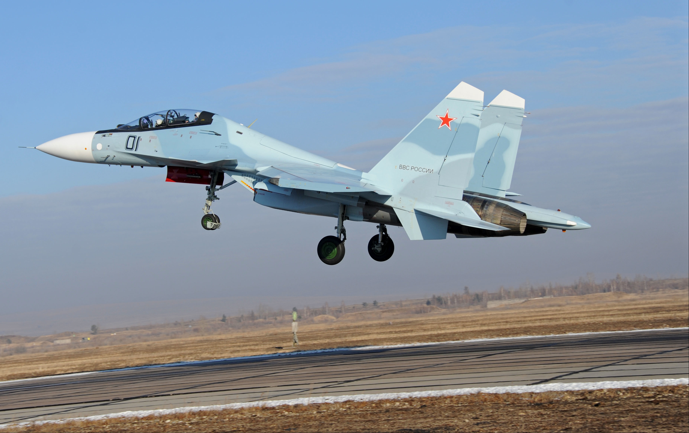

An air superiority fighter is a fighter aircraft designed to seize control of an enemy airspace by establishing tactical dominance (air superiority) over the opposing air force. Air superiority fighters are primarily tasked to perform aerial combats against hostile aircraft (most often enemy fighters) and eliminate any challenge over control of the airspace, although some (e.g. strike fighters) may have a secondary role for air-to-surface attacks.

The Lockheed Martin F-22 Raptor is a single-seat, twin-engine, all-weather stealth tactical fighter aircraft developed for the United States Air Force (USAF). The result of the USAF's Advanced Tactical Fighter (ATF) program, the aircraft
was designed primarily as an air superiority fighter, but also has ground attack, electronic warfare, and signal intelligence capabilities.The prime contractor, Lockheed Martin, built most of the F-22's airframe and weapons systems
and conducted final assembly, while Boeing provided the wings, aft fuselage, avionics integration, and training systems. The aircraft was variously designated F-22 and F/A-22 before it formally entered service in December 2005 as the
F-22A. Despite its protracted development and various operational issues, USAF officials consider the F-22 a critical component of the service's tactical air power. Its combination of stealth, aerodynamic performance, and avionics
systems enable unprecedented air combat capabilities.
Lockheed Martin F-22 Raptor

The Lockheed Martin F-35 Lightning II is an American family of single-seat, single-engine, all-weather stealth multirole combat aircraft that is intended to perform both air superiority and strike missions. It is also able to provide electronic
warfare and intelligence, surveillance, and reconnaissance capabilities. Lockheed Martin is the prime F-35 contractor, with principal partners Northrop Grumman and BAE Systems. The aircraft has three main variants: the conventional
takeoff and landing F-35A (CTOL), the short take-off and vertical-landing F-35B (STOVL), and the carrier-based F-35C (CV/CATOBAR). The aircraft descends from the Lockheed Martin X-35, which in 2001 beat the Boeing X-32 to win the Joint
Strike Fighter (JSF) program. Its development is principally funded by the United States, with additional funding from program partner countries from NATO and close U.S. allies, including the United Kingdom, Italy, Australia, Canada,
Norway, Denmark, the Netherlands, and formerly Turkey.Several other countries have ordered, or are considering ordering, the aircraft. The program has drawn much scrutiny and criticism for its unprecedented size, complexity, ballooning
costs, and much-delayed deliveries.The acquisition strategy of concurrent production of the aircraft while it was still in development and testing led to expensive design changes and retrofits.
Lockheed Martin F-35 Lightning II

Dassault Rafale

The Sukhoi Su-30MKI[a] (NATO reporting name: Flanker-H) is a twinjet multirole air superiority fighter developed by Russia's Sukhoi and built under licence by India's Hindustan Aeronautics Limited (HAL) for the Indian Air Force (IAF).
A variant of the Sukhoi Su-30, it is a heavy, all-weather, long-range fighter. Development of the variant started after India signed a deal with Russia in 2000 to manufacture 140 Su-30 fighter jets.The first Russian-made Su-30MKI variant
was accepted into the Indian Air Force in 2002, while the first Su-30MKI assembled in India entered service with the IAF in 2004.The IAF has nearly 260 Su-30MKIs in inventory as of January 2020.The Su-30MKI is expected to form the
backbone of the Indian Air Force's fighter fleet to 2020 and beyond.The aircraft is tailor-made for Indian specifications and integrates Indian systems and avionics as well as French and Israeli sub-systems.It has abilities similar
to the Sukhoi Su-35 with which it shares many features and components.